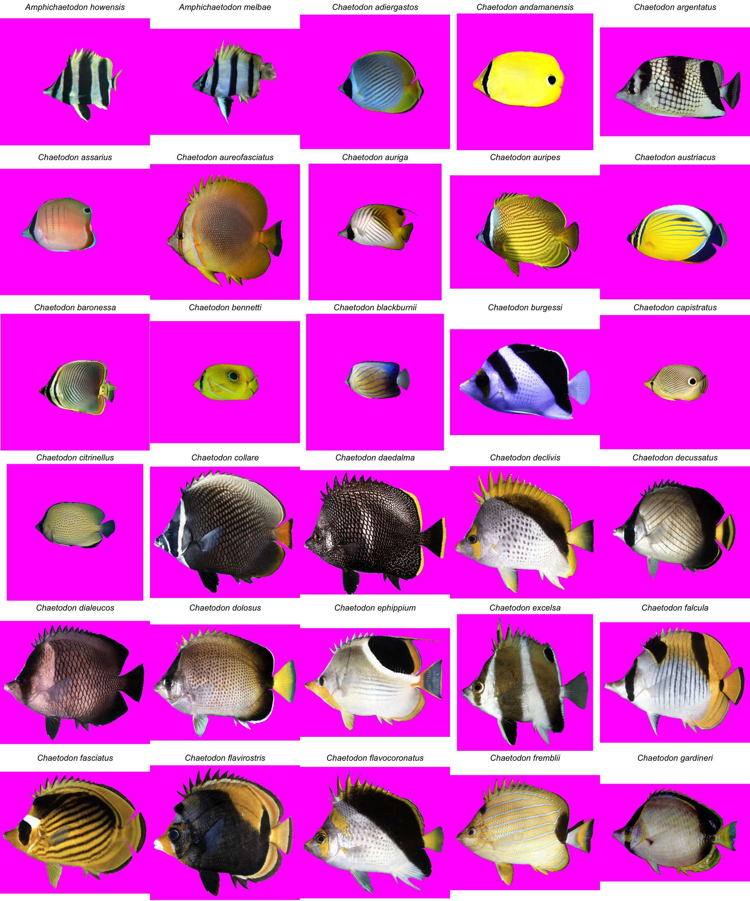
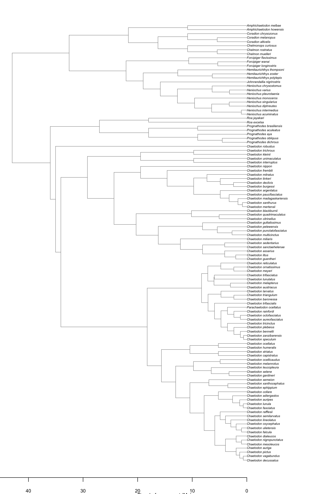

Chaetodontidae — Butterflyfishes
Quick-Reference Card
Note
| Field | Content |
|---|---|
| Species in tree | 109 (one tip per species, voucher suffixes stripped) |
| Exemplars in bundle | 130 (some species have no tip; some tips have no exemplar) |
| Family size | ~130 species in ~12 genera |
| Crown age | ~43 Ma (Eocene) |
| Sexual system | Gonochoristic; long-term pair bonds in many Chaetodon |
| Primary diet | Obligate corallivory, generalist invertivory, planktivory — often within the same genus |
| Depth range | Reef crest to lower mesophotic (~150 m in Prognathodes) |
| Key references | Bellwood et al. (2010); Cowman et al. (2017); Hemingson & Bellwood (2018); Hodge et al. (2014) |
Taxonomy and Phylogenetics
Chaetodontidae is a family of small reef-associated percomorphs distributed across tropical Indo-Pacific, Atlantic, and Eastern Pacific reefs. The current working classification recognizes ~130 species in two subfamilies — the Chaetodontinae (Chaetodon and allies, ~90 species) and the Prognathodinae (Prognathodes, Roa, and the Forcipiger / Hemitaurichthys group). The phylogenomic tree used in this walkthrough contains 109 tips after collapsing voucher duplicates, with a crown age of ~43 Ma fixed by congruification onto a fossil-calibrated reference tree.
The most recent backbone work places butterflyfishes as sister to pomacanthids (Bellwood et al., 2010; Cowman et al., 2017), with which they share many of the perceptual and signaling features explored in this course. Generic boundaries within Chaetodon remain partly unsettled, but the broad species-group structure (e.g., the trifascialis, unimaculatus, citrinellus, and kleinii groups) is well supported.
Natural History
Butterflyfishes are diurnal, visually oriented reef specialists. Most species are obligately coral-associated, and ~60% of Chaetodon are obligate corallivores that feed primarily on the tissue of living scleractinians (Cole et al., 2008). The remaining species are generalist invertivores (Forcipiger, Chelmon) or midwater planktivores (Hemitaurichthys, several Heniochus and Prognathodes). Diet matters for color biology because corallivores tend to maintain extremely tight site fidelity around their feeding territories, where mate choice and species recognition both operate against the same visual backdrop.
A defining life-history feature of the family is long-term pair bonding: many Chaetodon species form monogamous pairs that persist for years and coordinate territorial defense and feeding (Hodge et al., 2014). Both sexes look essentially identical (sexual monochromatism) but the pair, treated as a perceptual unit, is highly distinctive against the reef — which has shaped the family’s iconic bold, contrastive patterns.
Color Pattern Diversity
Hemingson & Bellwood (2018) used the butterflyfishes as their flagship system for studying color pattern divergence in sympatric sister pairs, finding that sister species in geographic overlap diverge more in pattern than those in allopatry, especially on metrics related to stripe orientation and boundary geometry. This effect motivates the metrics computed in the Color Gamut and Continuous ASR recipes on this site.
Pattern diversity within the family spans:
- Vertical-bar designs (Chaetodon trifasciatus, C. lunulatus, C. ornatissimus) where the body is divided into 3-7 contrasting bands.
- Horizontal-stripe designs (C. striatus, C. octofasciatus) where bars are rotated 90° to align with the body axis.
- Spot-and-eyespot designs (C. punctatofasciatus, C. semeion, C. unimaculatus) with discrete pigmented dots and false eyespots near the caudal peduncle.
- Bicolour wedge designs (C. paucifasciatus, C. mertensii) with the body sharply divided into anterior pale and posterior coloured halves.
- Cryptic and pelagic designs (Hemitaurichthys polylepis, H. zoster) for the planktivorous and offshore taxa.
The gamut built in the next recipe will sample the full RGB range present across these patterns, after removing background pixels.
Exemplar Set in This Bundle
The bundle includes one curated exemplar image per species for 130 species. Image source priority follows the original analysis: oriented in-house photos where available, then iNaturalist, then FishBase, then Bishop. The exemplar_inventory.csv (not shipped in the student-facing bundle, but available in the source analysis) tracks the per-species gestalt_k (2–5) that was used in pavo::classify to seed the cached object.
Tree

References
- Bellwood, D. R., Klanten, S., Cowman, P. F., Pratchett, M. S., Konow, N., & van Herwerden, L. (2010). Evolutionary history of the butterflyfishes (f. Chaetodontidae) and the rise of coral feeding fishes. Journal of Evolutionary Biology, 23, 335-349.
- Cole, A. J., Pratchett, M. S., & Jones, G. P. (2008). Diversity and functional importance of coral-feeding fishes on tropical coral reefs. Fish and Fisheries, 9, 286-307.
- Cowman, P. F., Bellwood, D. R., & van Herwerden, L. (2017). Molecular phylogenetics and evolution of the Chaetodontidae. Molecular Phylogenetics and Evolution, 116, 24-38.
- Hemingson, C. R., & Bellwood, D. R. (2018). Biogeographic patterns in major marine realms: function, not taxonomy, unites fish assemblages. Journal of Biogeography, 45, 1416-1427.
- Hodge, J. R., van Herwerden, L., & Bellwood, D. R. (2014). Temporal evolution of coral reef fishes: global patterns and disparity in isolated locations. Journal of Biogeography, 41, 2115-2127.